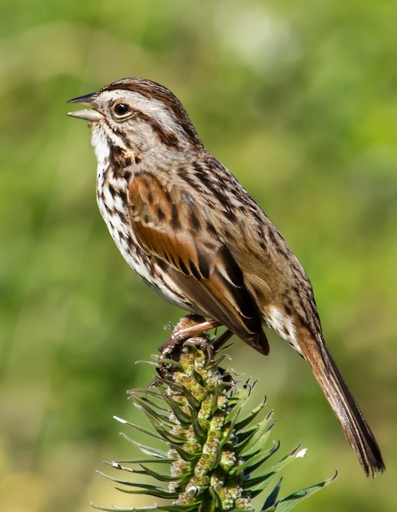

Birds are very active and prominent animals. They come in many different shapes and sizes and they're seen all around the country. These birds tend to selectively choose what areas they inhabit depending on various environmental factors. We opted to analyze population data of the Song Sparrow, one of the most commonly sighted birds in the United States. The data we selected spans the 30 years from 1981-2010. In that time, Song Sparrows have seen a decrease in population among certain parts of the country. With the effects of global warming only getting more severe as time goes on, we looked to track how changes in climate affected Song Sparrow populations in different areas of the United States. In order to take into account the different environments present across the country, we decided to examine four different states: Wisconsin, New York, California, and Wyoming. These four states expereince differing weather patterns from one another, allowing us to see what climatic factors Song Sparrows tolerate, and what factors they don't.
Click here for a breakdown of the data we used
Click here to see all plots, graphs, visualizations, and animations of the data
Click here for bibliography and the links to sources